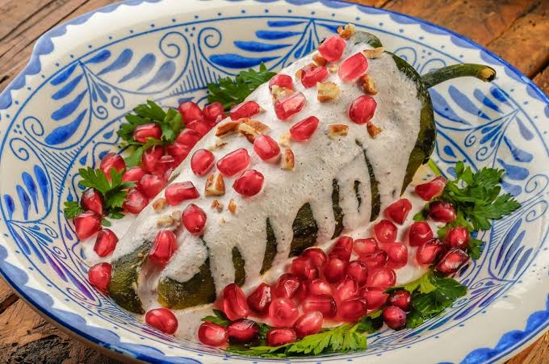

¿Sabías que...?
- Origen de los Chiles en Nogada: Creado por las monjas agustinas del convento de Santa Mónica en Puebla para celebrar la firma de los Tratados de Córdoba y homenajear a Agustín de Iturbide, usando ingredientes que representan los colores de la bandera.
- El significado del color verde original: En la Bandera de las Tres Garantías (1821), el verde significaba la independencia de España, el blanco la fe católica y el rojo la unión entre europeos y americanos.
- La campana original: La campana de San Diego de Alcalá que tocó Hidalgo en Dolores no se quedó allí; en 1896 fue trasladada al Palacio Nacional en la Ciudad de México para la ceremonia del Grito de Independencia.
